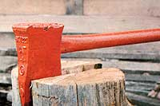
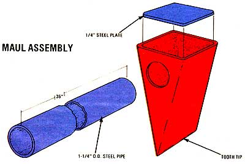

Splitting wood can be either an exhausting chore or pleasant and healthful exercise, depending on how you go about it. If you'd prefer the latter (and who wouldn't?), put your axe aside and work on those big logs with a do-it-yourself maul.
A worn and discarded end-loader bucket's cutting-edge tooth is the key to this project. You ought to be able to find one in the scrap pile of almost any heavy equipment user or dealer. The other necessary pieces-a 36" length of 1-1/4" (outside diameter) double-strength pipe and a small square of flat steel-can also be scrounged up or purchased at your local salvage yard. (The cost should be no more than $5.00.)
Assemble the maul by inserting the handle into a hole cut through the side of the tooth, as shown in the accompanying drawing. (In some cases, the size and shape of the tip may make it necessary to elongate the hole and flatten the handle end in order to mate the two components properly.) Slide the pipe across the cavity until it butts against the opposite wall. Then weld it in place, cut the face-plate to fit, and secure that covering to the back of the tooth.
While adding paint isn't absolutely necessary (the thick metals of the pipe and head will last for many years), a colorful coating will make the maul easier to keep track of if you take it into the woods to do your splitting.
|
 |
 |
|